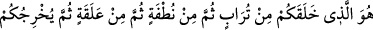
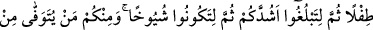
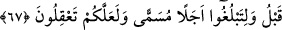

mertebesi bunlar değilse sana göre nedir?” diye sorunca Hazret şu cevabı vermiş:
“Görünürde halkla beraber iken gerçekte Hak’la beraber olmaktır. Ki bu istikamet
makamıdır. Çünkü bu makama erenler temkinde (sâbit bir vaziyette yaşamakta), hatta
telvîn-i temkinde (bu sebâtın farklı mertebelerinde) iyice derinlik kazanmışlardır. Bu
bakımdan “sır ifşâsı” ve “bazılarının fitneye düştükleri o şeye sâhip oldukları iddiâsı”,
böylelerinden sâdır olmaz. Edeb edilecek zamanda duraksayanlara ve herkese karşı Rab
ile birlikte olduğu bilinciyle muâmele edenlere ne mutlu!
Şeyh Üftâde Efendi (k.s.), Seyyid Nesîmî hakkında diyor ki: “Bu zat gerçekten güzel
şeyler anladı, ama gizli kalması gereken bazı şeyleri açıkladı.” Sofyalı Bâlî Efendi ise
Nesîmî’yi zındık ve mülhidlerden sayar. O halde hangi makamda olursa olsun, şerîate
göre davranmak esastır.
67. Sizi topraktan, sonra nutfeden, sonra alakadan (aşılanmış yumurtadan)
yaratan sonra bebek olarak çıkaran, sonra sizi güçlü kuvvetli bir çağa erişmeniz,
sonra da ihtiyarlamanız -ki içinizden daha önce vefat edenler de vardır- ve belli bir
vakte ulaşmanız için sizi yaşatan O’dur. Umulur ki düşünürsünüz.
Ey Ademoğulları! “Sizi;” babanız Âdem’in topraktan yaratılması dolayısıyla
“topraktan, sonra nutfeden” tafsilî bir yaratışla menîden… Râgıb der ki: Nutfe, “saf
su” demektir. Bu lafızla erkeğin suyu yâni sulbden gelip rahme bırakılan su ifâde edilir.
Nitekim İbn Sînâ şöyle diyor:
Cimâ etme öyle fazlaca; çünkü döktüğün
Âb-ı hayattır aslında, rahme dökülecek.
Âyetin mânâsı şudur: “Aslınız olan Âdem’i topraktan sonra da sizleri nesilden nesile
nutfeden” ya da “herbirinizi topraktan yaratan…” Çünkü herkes menîden
yaratılmaktadır. Menî ise kandan olup kan da hayvânî ve nebâtî gıdalardan meydana
gelir. Hayvânî olanlar da sonuçta nebâtî gıdalardır. Aksi takdirde hayvânî gıdâların
sonuna kadar zincirleme gidebilmesi gerekir. Bitki ise, su ve topraktan doğar. Yahut da,
babanız Âdem’in sulbünden çıkartarak oğullarının nutfesine mezcettiği toprak
zerreciklerinden ilk hayata geldiğiniz sırada bedeninizi yaratan…
“Sonra alekadan…” Aleka, kan pıhtısı demektir. Çünkü menî ana karnında kırk gün
sonra kan pıhtısı şekline gelir.[205]
“Sonra bebek olarak çıkaran…” “Tıfl,” Müfredât’ta belirtildiği gibi, henüz birkaç